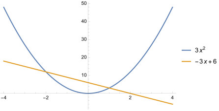

Ejercicio 1
Dada la función \( f(x) = 2(x + e^{2x}) \), calcula:
a) Los puntos de inflexión de la función \( f \), en caso de que existan.
Solución: Tiene un punto de inflexión en el punto ( JXUwMDc1
, JXUwMDc1
). (En caso que no exista, escribe un - en los cuadrados).
b) La ecuación de la recta tangente a la gráfica de \( f \) en el punto de abscisa \( x = 0 \).
Solución: La recta tangente tiene ecuación \(y=\) JXUwMDZl
\(x\)+ JXUwMDZh
.
c) La función \( F(x) \) sabiendo que \( F'(x) = f(x) \) y que su gráfica pasa por el punto \( (0, 2) \).
Solución: \(F(x)=\) JXUwMDY5
\(x^2\)+ JXUwMDY4
\(x\)+ JXUwMDY5
+ JXUwMDY5
\(e^{2x}\). (En caso que algún coeficiente no aparezca, escribe \(0\) en el cuadro. También tienes que escribir \(1\) o el coeficiente con el signo negativo en caso necesario).
Ejercicio 2
Se consideran las funciones \( f \) y \( g \), definidas en \( \mathbb{R} \) de la siguiente forma:
\[ f(x) = x^2, \quad g(x) = 4 - x^2 \]
a) Calcula los puntos de corte de las gráficas de \( f \) y \( g \).
Solución: \(P=\) ( JXUwMDc1JXUwMDVlJXUwMDAyJXUwMDAzJXUwMDA2JXUwMDBmJXUwMDQ5JXUwMDRm
, JXUwMDZh
) y \(Q=\) ( JXUwMDJiJXUwMDAyJXUwMDAzJXUwMDA2JXUwMDBmJXUwMDQ5JXUwMDRm
, JXUwMDZh
). (En caso que salgan raíces no reducibles, escríbelas como sqrt{7}).
b) Representa sobre un mismo sistema de coordenadas cartesianas las gráficas de \( f \) y \( g \) y calcula el área de la región del plano delimitada por las gráficas de ambas funciones.
Solución: El área vale JXUwMDY5JXUwMDA3JXUwMDE5JXUwMDFjJXUwMDEzJXUwMDUzJXUwMDAyJXUwMDAzJXUwMDA2JXUw
MDBmJXUwMDQ5JXUwMDRm
\(u^2\).
Ejercicio 3
Dadas la parábola \( f(x) = 3x^2 \) y la recta \( g(x) = -3x + 6 \), se pide:
a) Representa sobre un mismo sistema de coordenadas cartesianas la gráfica de cada función.
Te debe quedar así:

Alejandro M. Realizado con Mathematica
b) Calcula el área del recinto plano limitado por las gráficas de \( f \) y \( g \).
Solución: JXUwMDZhJXUwMDA1JXUwMDE4JXUwMDFk
\(u^2\).
Ejercicio 4
Calcula el área limitada por las gráficas de la función \( f(x) = x^3 - 3x \) y la recta \( y = x \).
Solución: JXUwMDYw
\(u^2\).
Ayuda: representa en primer lugar ambas funciones y fíjate cómo cambia la región.
Ejercicio 5
La función de beneficios de una empresa, expresada en miles de euros, depende de la cantidad de producto fabricada, \( x \), expresada en miles de kg, según la función \( B(x) \). Si la función de beneficios marginales de la empresa (derivada de la función de beneficios) tiene la \[ B'(x) = 140 - \dfrac{180}{x+1} - 40x, \] se pide:
a) Determine la cantidad a producir por la empresa para maximizar los beneficios.
Solución: Hay que producir JXUwMDZhJXUwMDAyJXUwMDAwJXUwMDAw
kg.
b) Obtenga los intervalos de crecimiento y decrecimiento de la función de beneficios de la empresa.
Solución: La función es JXUwMDNjJXUwMDAxJXUwMDA2JXUwMDExJXUwMDE3
ciente en \((0,\frac{1}{2})\cup (2,+\infty)\) y es JXUwMDNiJXUwMDExJXUwMDE3
ciente en \((\frac{1}{2},0)\).
c) Obtenga la expresión de la función de beneficios \( B(x) \), si se considera que, si no se produce nada, el beneficio es nulo, es decir, \( B(0) = 0 \).
Solución: \(B(x)=\) JXUwMDY4
+ JXUwMDY5JXUwMDA1JXUwMDA0
\(x+\) JXUwMDc1JXUwMDFmJXUwMDAy
\(x^2+\) JXUwMDc1JXUwMDFjJXUwMDA5JXUwMDA4
\(\ln|x+1|\).